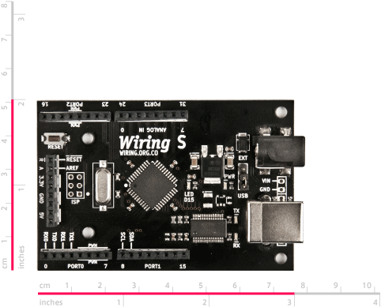

El hardware Wiring es un pequeño circuito que incluye un diminuto computador del tamaño de una estampilla conocido como microcontrolador. Este computador puede ser programado en el entorno de programación Wiring para controlar toda clase de sensores y actuadores. Los sensores son dispositivos que permiten a la tarjeta adquirir información del ambiente alrededor (temperatura, luz, distancia a un objeto, etc.). Los actuadores son dispositivos que permiten a la tarjeta generar cambios (respuestas) en el mundo físico (luz, movimiento, temperatura, etc.). Esto hace posible crear todo tipo de artefactos interactivos.
Un microcontrolador responde algunas de las dificultades relacionadas con la electrónica incluyendo el concepto de ser programables. La misma unidad puede comportarse de diferentes maneras, solamente haciendo o modificando un programa de software que se adapte a los propositos específicos.
Con el fin de conectar sensores y actuadores, el hardware Wiring provee un grupo de conectores conocidos como pines. Un pin puede ser ajustado como INPUT o OUTPUT si está siendo usado para leer un sensor o para crear un respuesta en le mundo físico a través de un actuador. Los sensores tienen varias categorias pero pueden ser agrupados en digitales o análogos. Los digitales se refieren a señales con dos posibles estados, ON o OFF, HIGH o LOW, como por ejemplo, los interruptores o protocolos especiales de comuncación digital. Los análogos se refieren a señales que pueden tomar cualquier valor en un rango continuo, como luminosidad o temperatura.
Los pines pueden tener funciones alternas, revise el diagrama y la información más abajo. Normalmente un tipo de función en un pin puede ser usada una vez.
El hardware Wiring puede ser conectado al puerto USB de un computador. Esta conección es para cargar un nuevo programa escrito en el entorno de programación Wiring dentro del hardware Wiring y para comunicar el hardware Wiring con un computador anfitrión (host) para otros propósitos, como enviar datos desde/para la tarjeta a una aplicación corriendo en un PC. El PC reconoce el hardware Wiring como un puerto serial, siendo posible recibir y enviar datos desde/para él desde las aplicaciones que están corriendo.
Hay 3 escenarios básicos de prototipado para los cuales Wiring fue diseñado: objetos o espacios interactivos autónomos (sin la necesidad de estar conectado a un computador anfitrión (host)), objetos o espacios interactivos conectados a un computador anfitrión (host) para destacar las capacidades del prototipo, o interconectar objetos o espacios comunicando multiples dispositivos de hardware.
Hay diferentes tipos del hardware Wiring: Las tarjetas Wiring V1.0 (incluye todas las tarjetas Wiring originales después de la revisión 004 y WiringMini con el microcontrolador atmega128), la tarjeta Wiring V1.1 Sparkfun (manufacturada y distribuida por sparkfun.com con los microcontroladores atmega1281 y atmega2561) y la nueva generación de tarjetas Wiring: Wiring S (con el microcontrolador atmega644p) y distribuidas por roguerobotics.com, Wiring M, Wiring XS y Wiring L (las cuales estarán disponibles pronto).
El hardware Wiring puede ser usado de inmediato, provee un puerto USB el cual puede ser directamente conectado al computador para cargar programas, sin ajustes especiales o la necesidad de conecciones para empezar a trabajar con él, por lo tanto es ideal en salones de clase ya que es está lista para usar.
Si desea adquirir el hardware original de Wiring vaya a http://roguerobotics.com. Para ver tarjetas compartibles o construir su propia tarjeta, por favor revise el FAQ o descargue el EAGLE y los archivos esquemáticos del diseño del hardware. Si está buscando tutoriales para instalar el hardware y el software revise la sección Learning / Tutorials.
Los temas cubiertos aquí incluyen: Pines Digitales input/output, Pines input Análogos, Pines PWM (análogos) output, Puertos Seriales, Pines con funciones especiales, Pines con interrupciones externas, Puertos Digitales input/output, LED de la tarjeta, y Fuente de alimentación.
The Wiring S board
Es la primera tarjeta de la nueva generación de hardware de Wiring. La tarjeta Wiring S está basada en el microcontrolador atmega644p (este chip también esta disponible en formato DIP para quienes deseen armar su propio circuito). Con 32 pines de entrada/salida, 8 entradas análogas, 2 puertos seriales de hardware, 6 salidas PWM (salidas análogas), SPI, TWI, 3 pines de interrupción externa, regulación de potencia con salida de 5V y 3.3V. Ver la comparación.

Wiring S dimensiones. Visite la sección de descargas para obtener los archivos fuente y esquemáticos completos
 Pines Digitales input/output
Pines Digitales input/output
El hardware Wiring tiene pines digitales que pueden ser configurados y usados individualmente como inputs (entradas) o outputs (salidas) desde el API del Wiring Framework en el entorno de programación Wiring. Cuando un pin digital es configurado como INPUT puede ser usado para leer cualquier tipo de sensores que den valores HIGH (On) y LOW (Off), como presionar un botón, tocar un sensor, interruptores, etc. leer pulsos o conectar cualquier sensor digital en general. Cuando un pin es usado como OUTPUT puede ser usado para cambiar de on (encendido) o off (apagado) cualquier tipo de dispositivos como bombillos, motores, aparatos eléctricos, generar pulsos, etc.
Todos los hardware Wiring incluyen un LED en la tarjeta conectado a un pin digital que puede ser usado para hacer pruebas rápidas de programas o diagnósticos. El LED en la tarjeta se llama WLED en el API del Wiring Framework.
En las tarjetas Wiring V1.x WLED está en el pin 48
En la tarjeta Wiring S WLED está en el pin 15
Pines input Análogos
El hardware Wiring tiene entradas análogas capaces de leer voltajes entre 0-5V. Internamente los voltajes estan transladados en números desde 0 a 1023. Estas entradas pueden ser usadas para medir cantidades continuas como intensidad de luz, temperatura, proximidad, posición usando sensores análogos, etc.
NOTA: Las entradas análogas pueden ser también usadas como pines digitales si es necesario, solo use la numeración continua de los pines digitales con los comandos pinMode, digitalRead o digitalWrite para acceder a ellos como pines digitales.
Pines PWM (análogos) output
El hardware Wiring tiene pines de salida PWM (Pulse Width Modulation). PWM consiste en cambiar algo ON y OFF cientos de veces por segundo simulando el comportamiento de una salida análoga, creando efectos como atenuacuones en la intensidad de la luz o controlar la velocidad de un motor. La funcionalidad de los PWM con disponibles en unos pines específicos.
En las tarjetas Wiring V1.x los pines con posibilidades PWM son: 29, 30, 31, 35, 36 y 37
En las tarjetas Wiring S los pines con posibilidades PWM son: 4, 5, 6, 7, 19 y 20
Puerto seriales
El hardware Wiring tiene 2 puertos seriales. En el API del Wiring Framework uno es llamado Serial y el otro es llamado Serial1. El puerto serial Serial es el mismo disponible a través del conector USB y es usado para programar la tarjeta Wiring con el entorno de desarrollo Wiring, y para comunicarlo con otros dispositivos.
En las tarjetas Wiring V1.x los pines del puerto serial Serial son: 32(RX0) y 33 (TX0) y los pines del puerto serial Serial1 son: 2(RX1) y 3(TX1)
En las tarjetas Wiring S los pines del puerto serial Serial son: 0 (RX0) y 1 (TX0) y el puerto serial Serial1 son: 2(RX1) y 3(TX1).
Pines con funciones especiales
El hardware Wiring provee ISP y TWI (Two Wire Interface) también conocido como comunicación i2c. El TWI permite conectar más de 128 sensores/actuadores i2c en una red usando solo dos cables para comunicarlos con todos ellos. Es también posible usar esos pines para crear una red de más de 127 tarjetas Wiring usando la libreria Wire. El protocolo ISP es manejado por la librería SPI y el protocolo TWI es manejado por la librería Wire.
En las tarjetas Wiring V1.x los pines ISP son: 24 (SS), 25 (MOSI), 26 (MISO) y 27 (SCK) En las tarjeta Wiring v1 los pines TWI son: 0 (SCL) y 1 (SDA)
En las tarjetas Wiring S los pines ISP son: 20 (SS), 21 (MOSI), 22 (MISO) y 23 (SCK) En las tarjetas Wiring S los pines TWI son: 8 (SCL) y 9 (SDA)
Pines con interrupciones externas
Es posible generar y atender interrupciones externas en el hardware Wiring. Hay pines en el hardware Wiring capaces de generar interrupciones externas
En las tarjetas Wiring V1.x los pines capaces de generar interrupciones externas son: 0, 1, 2, 3, 36, 37, 38, y 39, nombrados como EI0..EI7. Nota: Los pines 0 y 1 son también usados por la librería Wire (TWI) y los pines 2 y 3 son también el puerto serial Serial1.
En la tarjeta Wiring S los pines capaces de generar interrupciones externas son: 2, 3, y 18, nombrados como EI1, EI2 y EI3. Nota: Los pines 2 y 3 son también el puerto serial Serial1.
Puertos Digitales input/output
En el hardware Wiring los pines están agrupados en puertos. En la mayoria de los casos un puerto es un grupo de 8 pines, y pueden ser usados para enviar o recibir datos a un dispositivo en paralelo (8 bits al mismo tiempo). Son útiles cuando se usan dispositivos como display de cristal líquido (LCD) o impresoras. Cada puerto puede ser configurado y usado individualmente como INPUT o OUTPUT desde el API del Wiring Framework en el entorno de programación Wiring a través de los comandos portMode, portRead y portWrite.
Nota: Es posible usar la sección de entradas análogas como digitales, en tal caso los pines individuales y el puerto seguirá siendo numerado continuamente.
LED de la tarjeta
El hardware Wiring tiene cuatro LEDs en la tarjeta: un LED que muestra si la tarjeta está siendo alimentada, un LED directamente conectado a un pin digital que puede ser encendido o apagado desde el API del Wiring Framework y es conocido como WLED y los LEDs indicadores de la actividad de intercambio de datos (USB) - recepción (Rx) y transmisión (Tx) del puerto serial Serial.
Fuente de aplimentación
Una fuente genérica de alimentación de 7-12 Voltios 1000mA con conector hembra y centro positivo es necesario para alimentar el hardware Wiring. Funciona bien para varias aplicaciones, pero si es necesario más alimentación, se recomienda adquirir una fuente de corriente más robusta. El hardware Wiring puede ser también alimentado con baterias externas.
Para pequeños experimentos, con dispositivos de poco consumo de corriente, el hardware Wiring puede ser alimentado desde el puerto USB del computador cuando la tarjeta esta conectada a un computador anfitrión (host) usando un cable de impresora USB.
Un cable USB (cable USB genérico de impresora) es requerido para conectar el hardware Wiring a un computador anfitrión (host). La WiringMini requiere un adaptador de puerto serial (como el Wiring USBAdapter) para conectarlo al computador anfitrión (host).
Versiones previas del hardware de Wiring